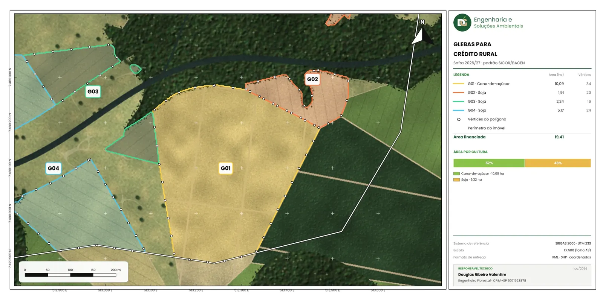

Delimitação das glebas financiadas por cultura e safra no formato exigido por bancos e cooperativas, com checagem de sobreposição com APP, embargos e unidades de conservação.


Agro e imóveis rurais

Delimitação das glebas financiadas por cultura e safra no formato exigido por bancos e cooperativas, com checagem de sobreposição com APP, embargos e unidades de conservação.